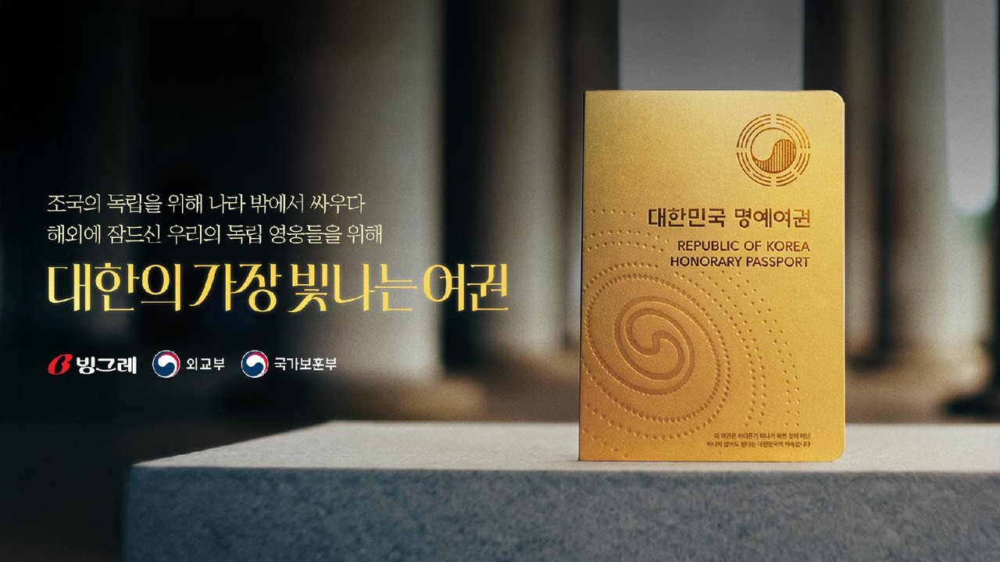
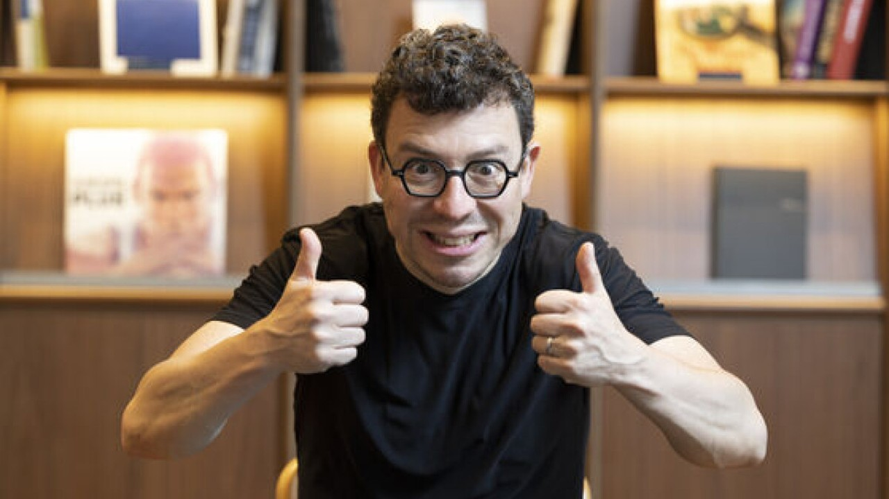
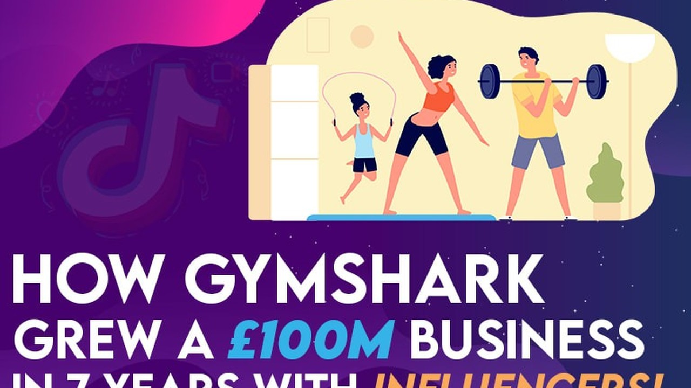
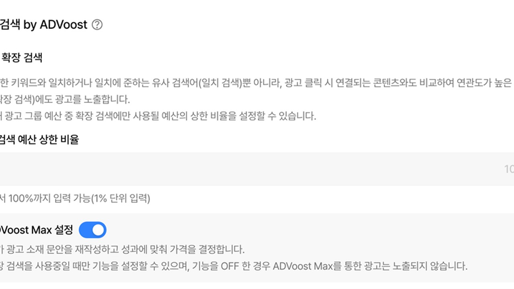
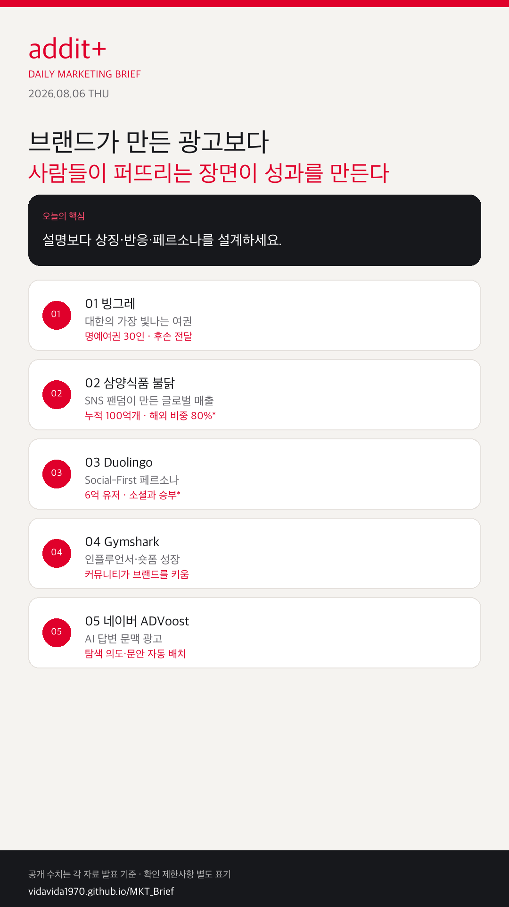

01
검색 광고가 AI 답변 문맥 안으로 들어간다
키워드 입찰보다 탐색 의도와 랜딩 정보 품질이 성과를 좌우합니다.
상징 오브제와 다큐 영상, 리액션 UGC, 캐릭터 페르소나, AI 문맥 광고가 각각 ‘설명’이 아니라 ‘퍼질 장면’을 설계하는 쪽으로 이동하고 있습니다.
키워드 입찰보다 탐색 의도와 랜딩 정보 품질이 성과를 좌우합니다.
포스터 한 장보다 여권·감사패 같은 물건과 스토리 영상이 공유를 만듭니다.
브랜드 연출보다 소비자의 시식·변형 장면이 알고리즘을 탑니다.
기능 설명 대신 밈·댓글 소통이 비광고성 노출을 만듭니다.
배너 단독이 아니라 YouTube·Discover·Gmail 자산 묶음 운영이 기본값입니다.

KOREA해외 독립유공자 30인의 명예여권을 제작하고 후손에게 전달한 뒤, TV·유튜브·인스타그램과 인천공항·현충원 미디어월로 확장했습니다. 국가보훈부·외교부 협업 구조가 공개 확인됩니다.
불닭 면류 누적 판매 100억 개, 누적 매출 7조 원, 해외 매출 비중 80%가 공개됐습니다. SNS를 중심으로 즐기는 문화가 단순 라면을 IP 브랜드로 확장시킨 대표 사례입니다.

GLOBAL창업자는 진짜 경쟁자가 교육 앱이 아니라 TikTok·Instagram이라고 말합니다. 600M+ 유저 규모를 바탕으로, 학습을 소셜만큼 중독적으로 만드는 Social-First 전략이 핵심입니다.

GLOBALInstagram에서 시작해 TikTok·YouTube 인플루언서로 확대한 성장 구조가 공개 분석됩니다. 일회성 할인보다 크리에이터·커뮤니티 기반 브랜드 자산 축적 모델이 핵심입니다.

KOREAAI 브리핑 지면에서 광고 문안과 삽입 위치를 AI가 판단합니다. 광고주센터 오픈 7월 15일, 광고 노출 7월 21일 일정이 공지됐습니다.
Display Ads를 Demand Gen으로 이전하며 YouTube·Discover·Gmail 등 멀티 자산 운영을 한 흐름으로 통합합니다.
Google 공식 발표 →빙그레 명예여권 캠페인은 보훈부·빙그레 협업 구조와 영상 확산 채널이 복수 보도에서 확인됩니다.
연합뉴스 보기 →
좋은 캠페인은 메시지를 더 자세히 설명하지 않습니다. 사람들이 들고, 찍고, 따라 하고, 댓글 달 수 있는 장면을 먼저 설계합니다.
{kind=link}